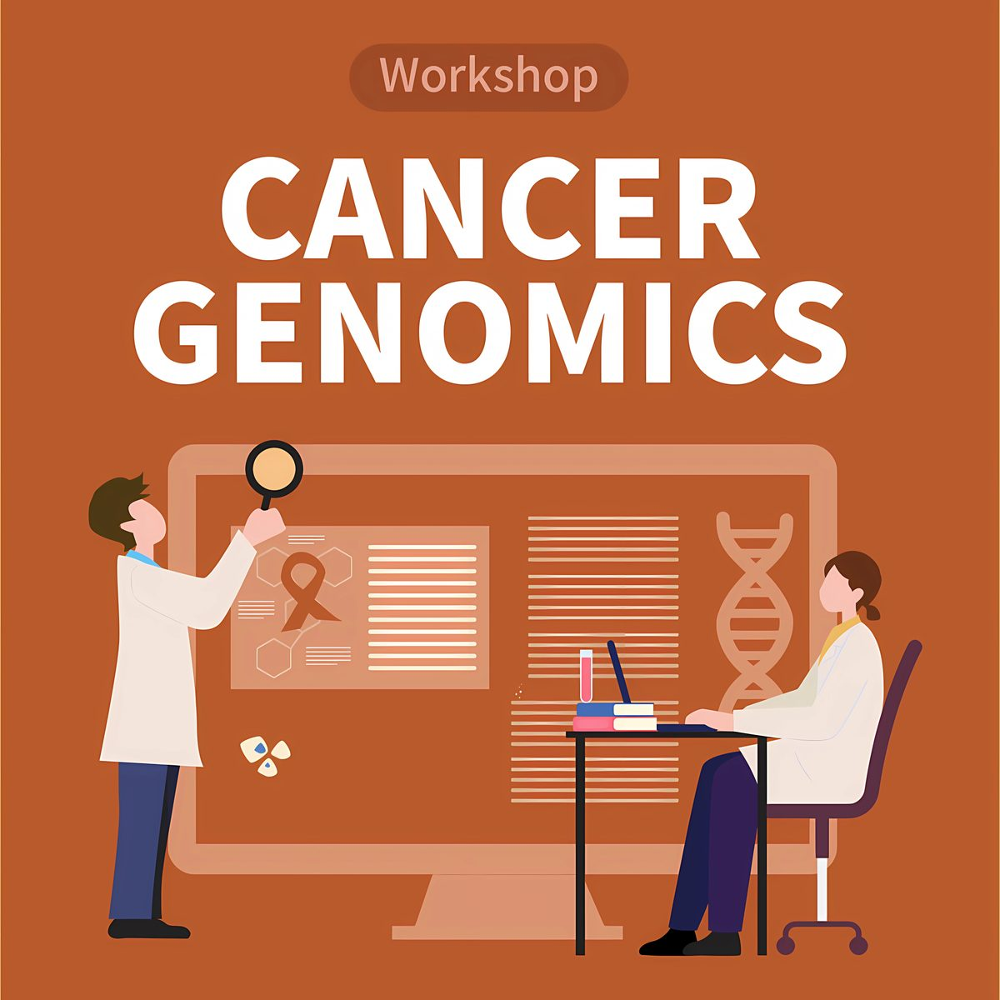
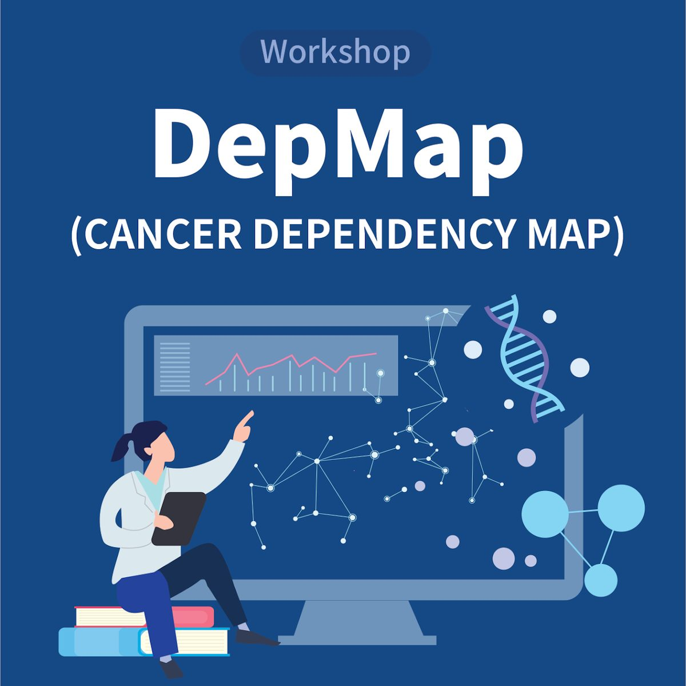
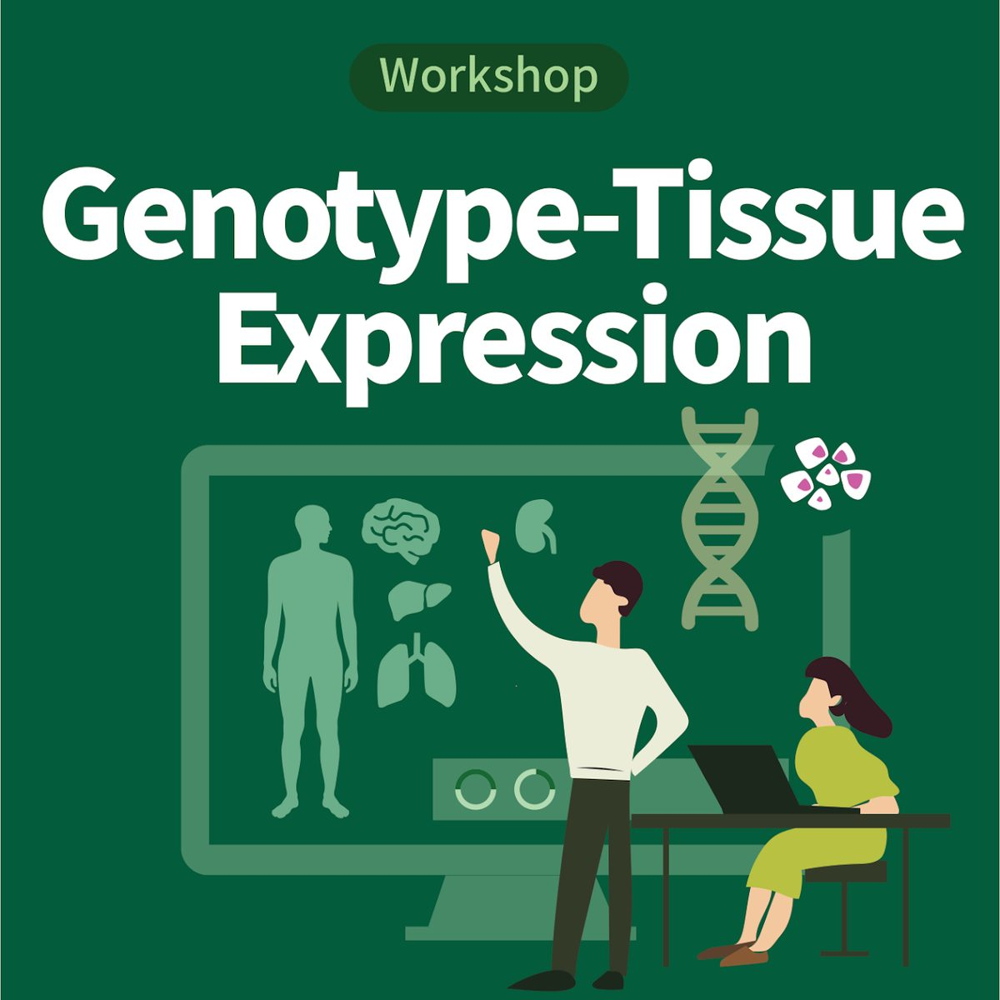

Workshop
암 유전체 데이터 분석 워크샵
TCGA와 CPTAC 암 유전체 데이터의 이해를 바탕으로, GDC 포털을 이용한 데이터 다운로드부터 R 패키지를 활용한 차등 발현 및 생존 분석까지, 핵심 이론과 실습을 아우르는 통합 분석 역량을 키울 수 있습니다.
Education
의료진과 연구자를 위해 유전체 빅데이터 분석, 차세대 염기서열 분석(NGS) 등 실무 중심의 교육과 워크샵을 제공합니다.
Workshop

TCGA와 CPTAC 암 유전체 데이터의 이해를 바탕으로, GDC 포털을 이용한 데이터 다운로드부터 R 패키지를 활용한 차등 발현 및 생존 분석까지, 핵심 이론과 실습을 아우르는 통합 분석 역량을 키울 수 있습니다.

DepMap(Cancer Dependency Map)은 1,000종 이상의 암세포주 유전체 데이터를 제공하는 암 연구 플랫폼입니다. 이 워크샵에서는 DepMap 포털 사용법부터 데이터 분석, 시각화, 결과 해석까지 연구에 바로 적용할 수 있는 모든 과정을 배웁니다.

질병 메커니즘 연구의 필수 자원인 GTEx는 유전 변이와 조직별 유전자 발현의 관계를 담고 있습니다. GTEx 포털 활용법부터 조직 특이적 유전자 발현 분석, eQTL 데이터 해석까지 실습을 통해 배울 수 있습니다.
최근 개최한 교육 워크샵입니다.
| 날짜 | 워크샵 |
|---|---|
| 암세포주 유전체 데이터 분석 워크샵: DepMap 자원 활용 | |
| GTEx 데이터 활용 워크샵 | |
| TCGAbiolinks를 활용한 암 유전체 데이터 분석 | |
| 셀라인 유전체 데이터 분석 워크샵 | |
| CPTAC 암유전체-단백체 데이터 분석 | |
| 셀라인 유전체 데이터 분석 워크샵 | |
| 셀라인 유전체 데이터 분석 워크샵 |
개최 일정과 신청 방법은 cmcpmrc@gmail.com 으로 문의해 주세요.
Seminar
국내외 리더급 연구자를 초청해 세미나를 개최하고 있습니다. 각 세미나의 공고문과 현장 사진을 최신순으로 정리했습니다.
박찬희 박사 · Theragen Bio
2026년 7월 22일(수) 오전 11시 · 옴니버스파크 L007호


Prof. Junichi Sadoshima · Rutgers New Jersey Medical School
2026년 6월 4일(목) 오전 10시 30분 · 옴니버스 파크 L007


박지환 교수 · 광주과학기술원 생명과학과
2025년 11월 19일(수) 오전 11시 · 옴니버스 파크 L007호


Prof. Bin Tian · The Wistar Institute, USA
2024년 9월 30일(월) 오전 11시 · 옴니버스 파크 L004